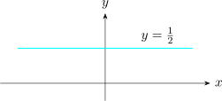

1.1 The Complex Plane
It is natural to associate the complex number \(z = x + iy\) with a point in the plane whose Cartesian coordinates
are \(x\) and \(y\). The number \(z\) can be thought of as a directed line segment or a vector from the origin, to the
point \((x,y)\).
Definition
Let \(z = x + iy\) be any complex number then the modulus of \(z\) denoted \(\left |z\right |\) is the non-negative real number
\(\hspace {0.2cm} \left |z\right | = \sqrt {x^2 + y^2}\)
Remark
While the statement \(\hspace {0.1cm} z_1 < z_2\hspace {0.1cm}\) is in general meaningless, \(\hspace {0.1cm}\left |z_1\right | < \left |z_2\right |\hspace {0.1cm}\) means that the points corresponding to \(z_1\) is closer to
the origin than the point corresponding to \(z_2\).
Definition
The distance between the points representing the complex numbers \(z_1\) and \(z_2\) is given by
\[\left |z_1 - z_2\right | = \sqrt {(x_1 -x_2)^2 + (y_1- y_2)^2}\]
It is important to note that
- 1.
- \(\left |z\right |\) distance in the complex plane of a complex number from \(0\).
- 2.
- \(\left |z_1 - z_2\right |\) distance in the plane from \(z_1\) to \(z_2\)
- 3.
- \(z\cdot \overline {z} = \left |z\right |^2\hspace {0.3cm}\) i.e \(\hspace {0.3cm} \left |z\right |^2 = \big (Re z\big )^2 + \big (Im z\big )^2\)
- 4.
- \(\operatorname {Re} (z) \leq \left |\operatorname {Re}(z)\right | \leq \left |z\right |\hspace {0.2cm}\) and \(\hspace {0.2cm} \operatorname {Im} (z) \leq \left |\operatorname {Im} (z)\right | \leq \left |z\right |\)
- 5.
- \(\left |z_1 + z_2\right | \leq \left |z_1\right | + \left |z_2\right |\hspace {0.2cm}\) triangle inequality and the equality holds if and only if \(z_1\) and \(z_2\) lie on the same (half ray)
through the origin in the complex plane.
Example
Describe the set of points \(z\) in the complex plane that satisfy \(\hspace {0.2cm} \left |z\right | = \left |z - i\right |\)
Solution
Let \(\hspace {0.2cm} z = x + iy\hspace {0.2cm}\) then \begin {align*} \left |z\right | & = \left |z - i\right |\\\\ \implies \hspace {0.5cm}\left |x + iy\right | & = \left |x + iy - i\right |\\ \implies \hspace {0.5cm} \sqrt {x^2 + y^2} & = \sqrt {x^2 + (y - 1)^2 }\\ x^2 + y^2 & = x^2 + (y - 1)^2\\ y^2 & = y^2 - 2y + 1\\\\ \implies \hspace {0.5cm} y = \dfrac {1}{2} \end {align*}
Since the equality is true for arbitrary \(x\), \(\hspace {0.2cm} y = \dfrac {1}{2}\) is an equation on the horizontal line. This the complex numbers satisfying \(\hspace {0.2cm}\left |z\right | = \left |z - i\right |\hspace {0.2cm}\) can be written as \(\hspace {0.2cm} z = x + \dfrac {1}{2}i\)

Questions on this section
Stuck on something here? Ask below and it stays attached to this topic.